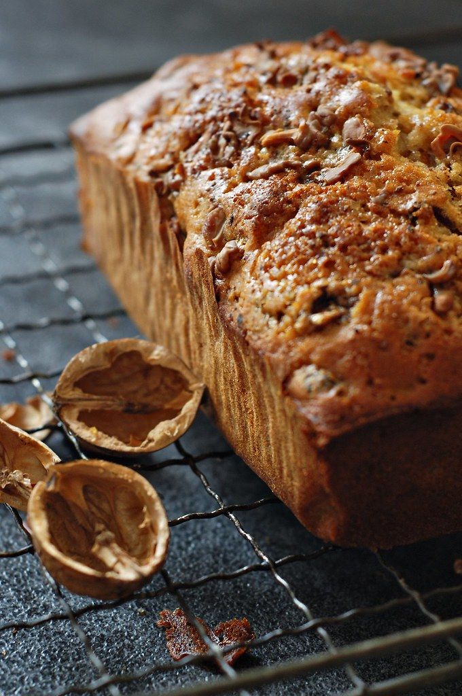

Banana Nut Bread
Home

Ingredients
- 3 ripe bananas
- 1/3 cup melted butter
- 3/4 cup sugar
- 1 egg, beaten
- 1 teaspoon baking soda
- pinch of salt
- 1 teaspoon vanilla extract
- 1 1/2 cups all-purpose flour
- 1/2 cup chopped nuts (optional)
Instructions
- Preheat the oven to 350°F (175°C) and grease a 4x8-inch loaf pan.
- In a large bowl, mash the ripe bananas with a fork until smooth.
- Mix in the melted butter, sugar, beaten egg, baking soda, salt, and vanilla extract.
- Add the all-purpose flour and chopped nuts (if using) and mix until just combined.
- Pour the batter into the prepared loaf pan and smooth the top with a spatula.
- Bake for 50-60 minutes or until a toothpick inserted into the center comes out clean.
- Let the bread cool in the pan for 10 minutes, then transfer to a wire rack to cool completely before slicing.